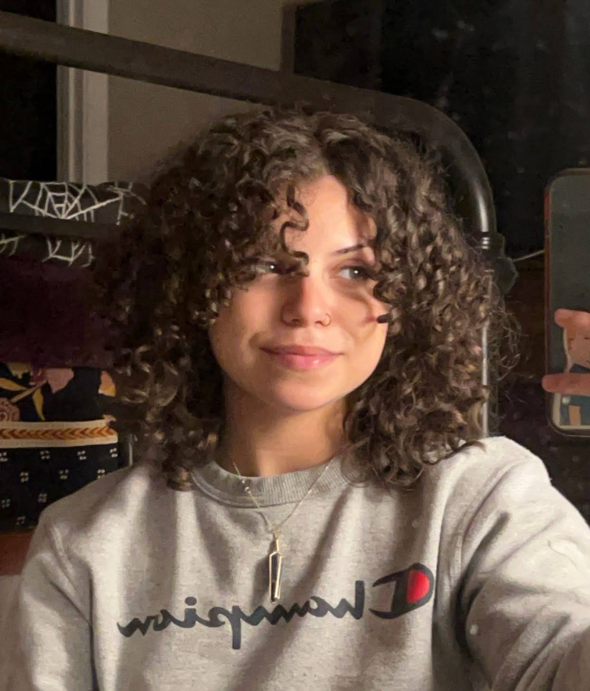

Taylor Chavis Tenacious Caiman || ITIS3135 Introduction
Introduction
Taylor Chavis || Tenacious Caiman

Taylor Chavis
Personal Background: I’m a born and raised Charlotte native but am looking forward to moving to Virginia once I graduate.
Programming Background: I have a fairly intermediate knowledge of web design due to previous HTML and CSS courses. I am looking forward to learning even more about the subject. I also know C, Java, SQL, and Python.
Primary Computer Platform: Windows laptop because PC’s are expensive.
Courses:
MATH 1241: Required course but math keeps the brain sharp.
ITIS 3135: Required course but I think web design is fun and it gives me a break from some of my harder classes
ITCS 3160: Required course that I’ve already taken at CPCC but unfortunately the credit didn’t transfer.
ITSC 3146: As a cybersecurity major, it’s important for me to understand how operating systems work.
ESCI 1501: Environment, Society, and Sustainability: The world is burning. We should start thinking about ways to sustain the environment before it’s too late.
Funny/Interesting item about yourself: I like to play music in my free time and can play 3 different instruments.
I'd also like to share: I’m ridiculously good at Mario Kart.